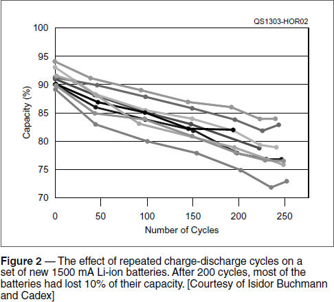
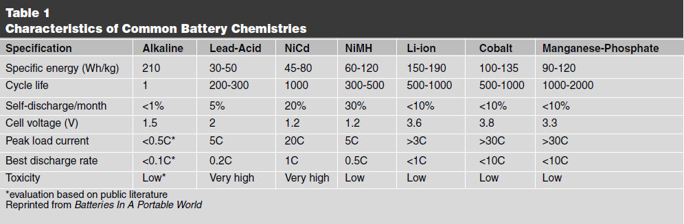
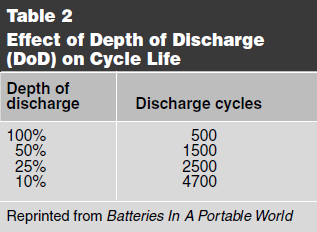
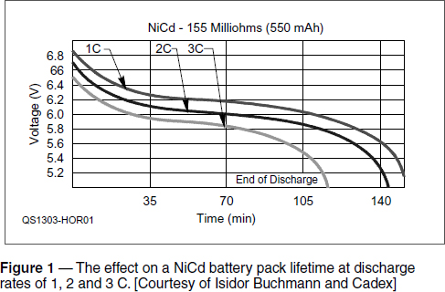

Electronic Components
Experiment #122 — Battery Characteristics, Part 1
This month, we begin a two part article about batteries and battery characteristics with a discussion of what makes batteries “go” and how the different types behave electrically. Next month, we’ll observe the differences for ourselves.
Basic Battery Construction and Chemistry
Viewed simply, the battery is a self-contained chemical reaction vessel in which chemical substances give up electrons that flow through an external circuit to other types of substances that accept electrons. The battery’s separator keeps the chemicals, well, separated so that the electrons have to make the trip through the circuit to be exchanged.
The electrons do some useful work along the way, converting the chemical energy to electrical energy and then to whatever type of energy the user extracts from the circuit — mechanical, heat, electromagnetic, etc. The reaction continues until all of the available electrons have been exchanged through the external circuit, depleting the chemicals and discharging the battery.
The types of atoms or molecules involved in giving up and accepting the electrons — called the battery chemistry — determine the electromotive force (EMF) that pushes the electrons through the circuit. Each type of atom or molecule has a certain affinity for electrons: Via a specific chemical reaction, some want to get rid of them and some want to acquire them. The strength of that reaction’s electron exchange is the reaction’s electropotential, which is measured in volts. The difference in electropotential between the chemicals is what determines the terminal voltage of the battery. (The list of electropotentials for common materials and reactions is also known as the galvanic series.)
Batteries are classified in two groups; primary (non-rechargeable) and secondary (rechargeable). In both groups, giving up and accepting electrons changes the chemicals into different compounds. (The atoms are still the same types of atoms but the rearrangement of their electrons changes the structure of molecules made from those atoms.) In a primary battery, the reaction is not reversible even if a voltage is applied externally to make the electrons flow “the other way.” In a secondary or rechargeable battery, the reaction will run in reverse if powered by an external voltage, restoring the original chemicals and recharging the battery.
Basic Battery Terminology
Let’s start with capacity, which is given in ampere-hours (Ah). Amperes (coulombs of charge per second) multiplied by time results in an amount of charge. (1 Ah = 1 coulomb/s × 3600 s/h = 3600 coulombs) Thus, capacity measures the number of electrons that a battery can cause to flow through an external circuit. Because capacity is an amount of charge, it is abbreviated C for coulomb. Causing large numbers to flow (high current) discharges a battery’s capacity quickly and low current discharges it slowly.
Capacity is independent of terminal voltage: A specific pair of chemicals has the same relative electropotential no matter what quantity of those chemicals is contained in the battery. Thus, terminal voltage is the same for large and small batteries of the same battery chemistry. The larger the quantity of chemicals in the battery, however, the more electrons can be exchanged.
Capacity also indicates the amount of energy stored in a battery. Since the terminal voltage is relatively constant and voltage is joules (J) per coulomb, multiplying capacity times ter- minal voltage yields energy, usually in units of watt-hours (Wh). For example, a capacity of 2 Ah and a 1.5 V terminal voltage represents 2 Ah × 1.5 V = 3 Wh. (Note that not all of the stored energy can be delivered to the external circuit and that terminal voltage drops as the battery is discharged.)
Another important battery characteristic related to its capacity is the battery’s specific energy, which is given in watt-hours per kilogram (Wh/kg). Batteries with high specific energy store a lot of energy for a given weight.
In battery literature, you will also encounter C-rate, which is the rate at which a battery is charged or discharged measured in terms of its capacity. If a 1000 mAh battery is discharged at a current of 1000 mA, it is being discharged at a rate of 1 C. At 500 mA, the rate is 0.5 C, and at 100 mA the rate is 0.1 C. Because batteries are made in so many different sizes using the same chemistry, C-rate is a useful way to talk about battery performance and maintenance independent of size.
Types of Battery Chemistry
Several battery chemistries account for most needs of the Amateur Radio operator: alka- line, lead-acid, nickel-cadmium (NiCd), nickel-metal hydride (NiMH) and lithium-ion (Li-ion). Table 1 gives the basic characteristics of these battery types.1 Alkaline batteries are primary (non-rechargeable) and the rest are secondary (rechargeable). While re-chargeable batteries offer higher specific energies and lower costs over the life of the battery, alkaline batteries do not require a charger, which can be important for emergency situations when ac power is not available. They also have a long shelf life.

Effect of Discharge Rate
Table 1 shows peak discharge rates for the various types of batteries in terms of capacity, however, that is not the recommended rate of discharge during normal use. The amount of energy a battery can deliver is maximized at a much lower rate, shown in the row “Best discharge rate” in Table 1. Note that all types of batteries perform best well below the peak discharge rate. Figure 1 shows the effect on a NiCd battery pack’s lifetime at different discharge rates. Other types of batteries are even more strongly affected by discharge rate.

Effect of Depth of Discharge
Depth of Discharge (DoD) has a large effect on the number of charge-discharge cycles a battery can provide. The more, or “deeper,” =a battery is discharged, the more it is stressed. Table 2 provides an idea of the effect on a Li-ion battery lifetime when repeatedly discharged to a specific level. Partial discharges preserve battery life.

Effect of Repeated Charge-Discharge Cycles
As most users of rechargeable batteries quickly discover, a battery performs like new over a number of charge-discharge cycles and then begins to lose capacity. This is due to changes at the microscopic level in the materials of the battery. For example, when a battery is new, the chemicals are typically in the form of very small crystals that provide lots of surface area to exchange electrons. With each cycle, however, the crystals grow in size and that reduces the total surface area and battery capacity.
Figure 2 shows the effect of repeated cycling on the capacity of a set of identical, new 1500 mAh Li-ion batteries. Even though the battery may be able to support hundreds of cycles, after 200 cycles most of the batteries had lost 10% of their initial capacity.

Effect of Temperature
Because batteries are based on chemical reactions that vary in rate with temperature, capacity is also affected. For example, a lead-acid battery loses about 10 to 20% of its capacity between room temperature (23° C) and freezing (0° C). By –20° C, about half of the capacity is lost. Thus it is very important for capacity to be measured at a specific temperature when comparing batteries. Automobile and deep cycle batteries have a Cold Cranking Amps (CCA) rating that must be specified at –18° C (0° F) for just this reason.
That is not to say that everything gets better with increasing temperature. From Batteries in a Portable World, “The optimum operating temperature for a [lead-acid] battery is 25° C (77° F). As a guideline, every 8° C (15° F) rise above this temperature cuts battery life in half. At 33° C (95° F), that battery’s lifetime is cut in half and is reduced to 10% at 45° C (107° F).”
Measuring Battery Performance
Next month we are going to both measure some of these effects on actual batteries and introduce you to a new type of voltmeter that has the ability to act as a data logger. Once you realize how useful data logging is, you’ll find all sorts of uses for it in the shack and around your home.
1I. Buchmann, Batteries In a Portable World, 2011, pp 34-37. Available from your ARRL dealer or the ARRL Bookstore, ARRL order no. 1156. Telephone 860-594-0355, or toll-free in the US 888-277-5289; www.arrl.org/shop; pubsales@arrl.org.